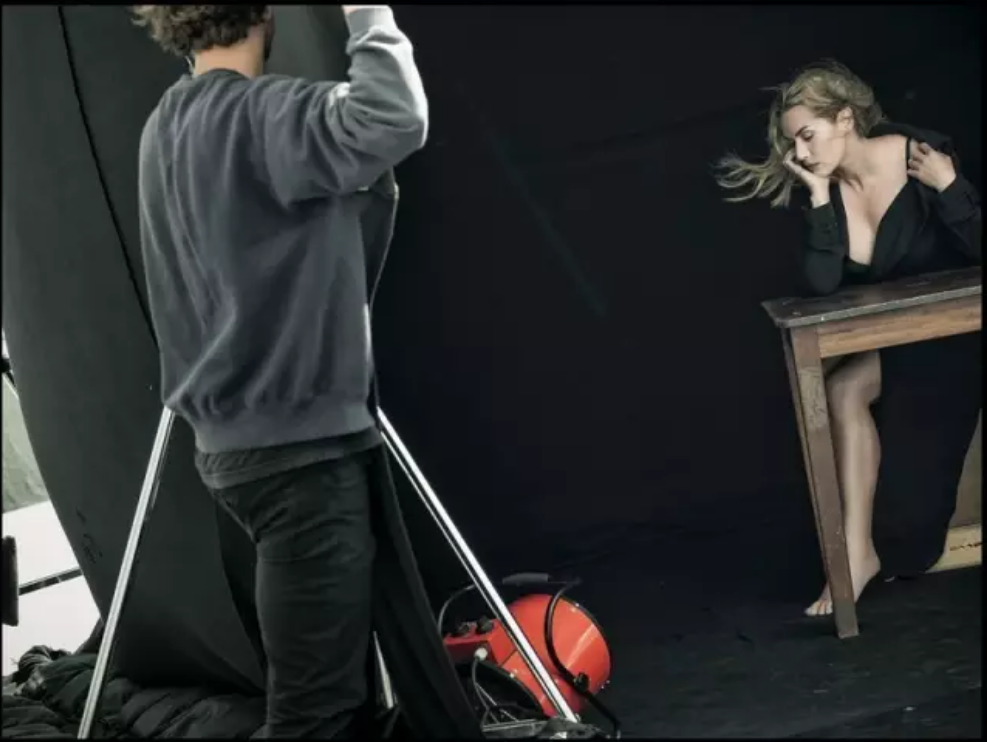
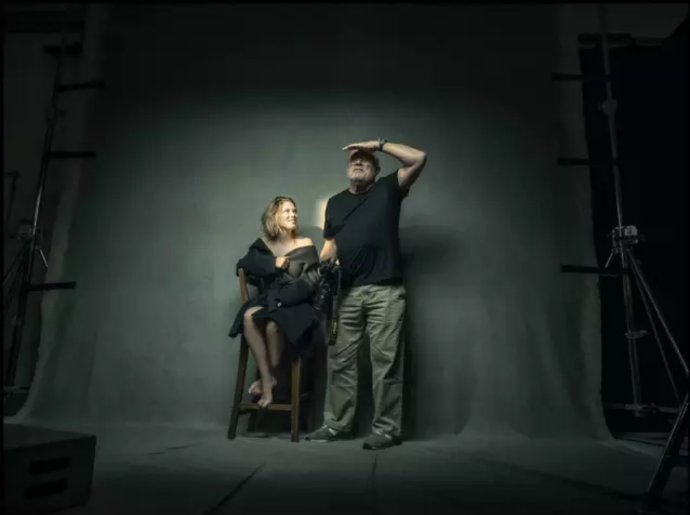
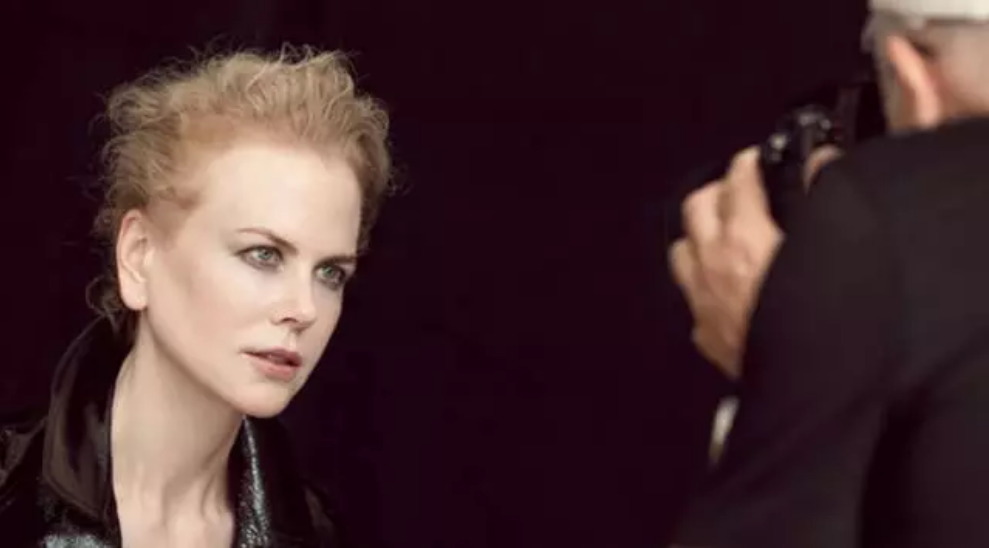
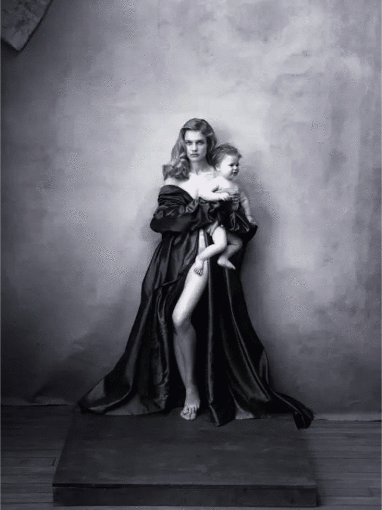
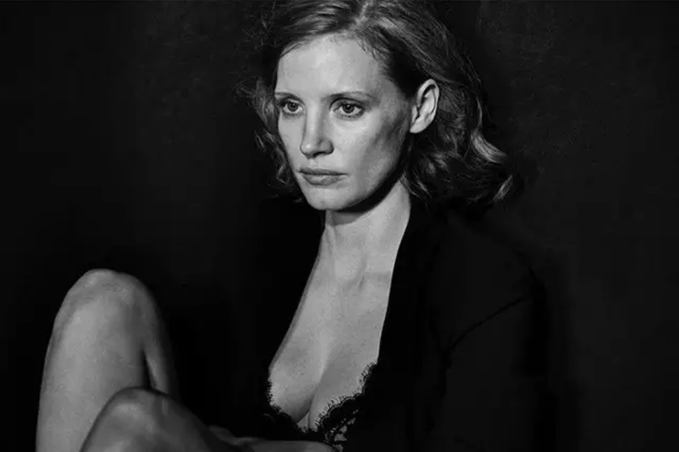
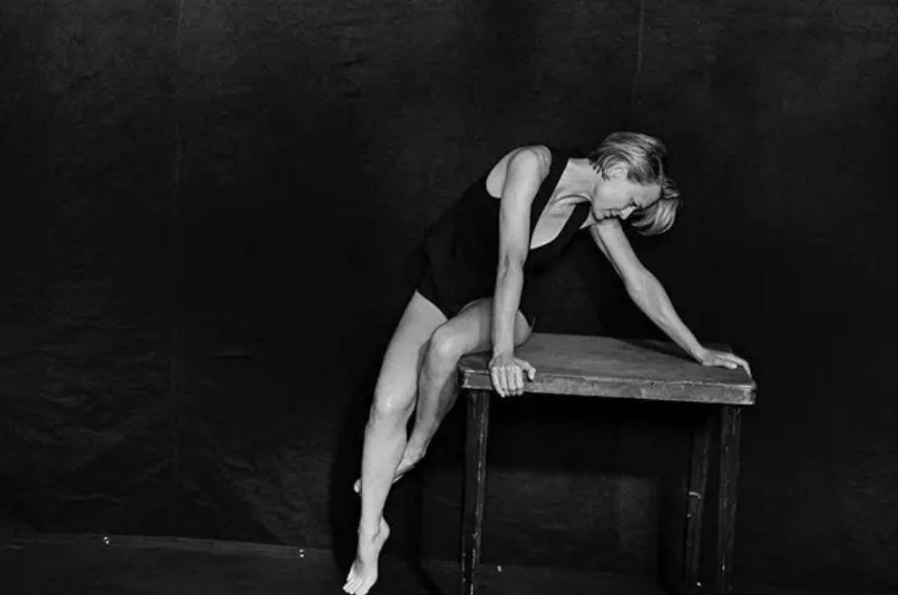
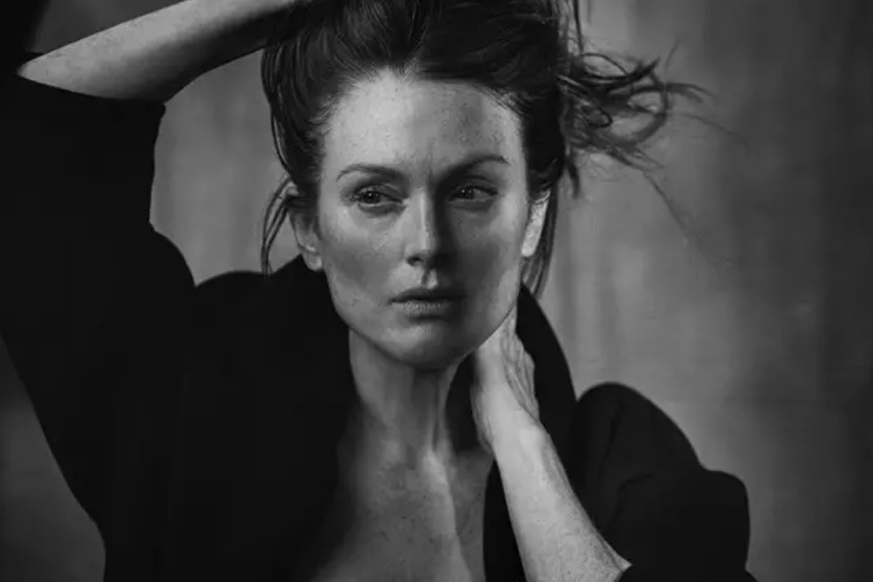

········································································································
DAILY INSPIRATION·······································································································
正如米其林轮胎之于美食界，1964年开始发行的倍耐力年历亦是时尚界“圣经”一般的存在。
今年倍耐力再次请到了“光影诗人”彼得·林德伯格（Peter Lundbergh）掌镜，年历主角则是包括凯特·温斯莱特、佩内洛普·克鲁兹、妮可·基德曼和章子怡等在内的14位知名女演员。但这一次，摄影师捕捉到的可能是她们最真实也最迷人的姿态。
 ▲ 凯特·温斯莱特意大利倍耐力轮胎公司出品的倍耐力年历（Pirelli Calendar）是世界上最知名的年历，没有之一，每年仅发放给公司的顶级客户和VIP，但每次发布仍会引发全球关注。
说起倍耐力年历，也许你就会条件反射地想到那些穿着内衣或者半裸的超模摆着性感挑逗的姿势，但倍耐力年历贩卖的不仅是性感图像，大牌模特、摄影、造型的完美组合更体现了这本年历的时尚艺术价值。
  ▲ 2017倍耐力年历拍摄花絮照但从去年开始，倍耐力年历的摄影发生了一些变化，年历女郎不再是性感出镜的超模。比如由安妮·莱博维茨掌镜的2016版倍耐力年历中，我们看到了许多艺术家、作家、电影人、公司创始人等权力女性的肖像。
 ▲ 2016年倍耐力年历2017年的年历项目，倍耐力再次请到了彼得·林德伯格掌镜拍摄。年历女郎是我们最熟悉的大荧幕女演员，包括杰西卡·查斯坦、佩内洛普·克鲁兹、妮可·基德曼、鲁妮·玛拉、海伦·米伦、朱丽安·摩尔、露皮塔·尼永奥、夏洛特·兰普林、蕾雅·赛杜、乌玛·瑟曼、艾丽西卡·维坎德、凯特·温斯莱特、罗宾·怀特、以及章子怡等14人。
 ▲ 杰西卡·查斯坦  ▲ 罗宾·怀特  ▲ 朱丽安·摩尔——Peter Lindbergh
这是林德伯格继1996年和2002年后第三次掌镜倍耐力年历的拍摄，今年的年历也一改往日香艳的画风，你可能从未见过这些荧幕明星卸下防备后原始而撩人的姿态。他也延续了自己真实而诗意的叙事风格，展示着女星们自然但情感充沛的一面——2017倍耐力年历的名字就叫做“情感”（Emotional）。
阅读原文